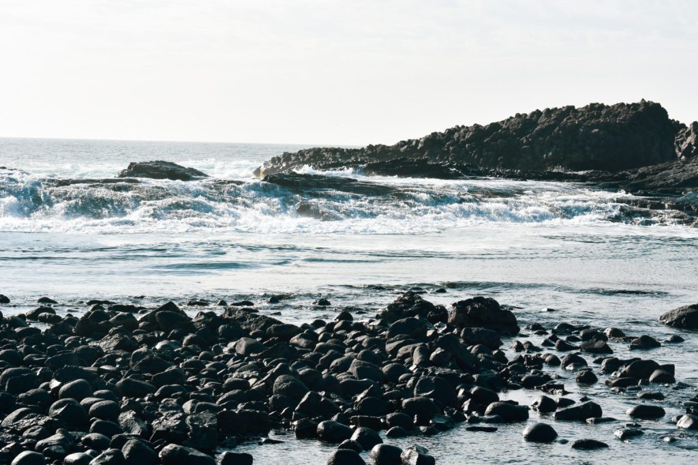
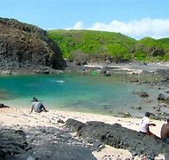
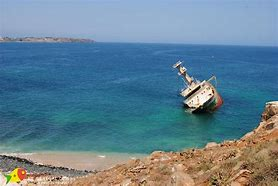
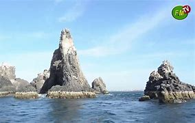

Notre voyage pour visiter Ilot Sarpan (Iles de la Madeleine) a commencé d’une manière un peu moins qu’idéale pour moi. Tout d’abord, nous étions le dernier groupe de touristes à arriver, et la plupart des guides touristiques étaient déjà sur l’île avec d’autres groupes. J’ai ressenti un léger sentiment d’inconfort de la part du reste du personnel. Ils semblaient un peu gênés par le fait que nous les distrayions de leur match de football. Je pourrais imaginer des choses, ou peut-être projeter ce que je ressentirais si quelqu’un sortait de nulle part, sollicitant mon attention pendant que je faisais quelque chose d’important. Et ne vous y trompez pas : le football est extrêmement important pour les Africains. Finalement, l’un des membres du personnel nous a aidés et en un rien de temps, étaient en route pour les Îles de la Madeleine, sur un canot motorisé.
Le Parc National des Iles de la Madeleine (PNIM) est l’un des six parcs nationaux du Sénégal. D’une superficie de 45 hectares, il est situé dans l’archipel des îles de la Madeleine, à 4 km au large de Dakar. Les îles de la Madeleine sont de petits rochers volcaniques inhabités avec des falaises abruptes à couverture steppique et milieu marin.